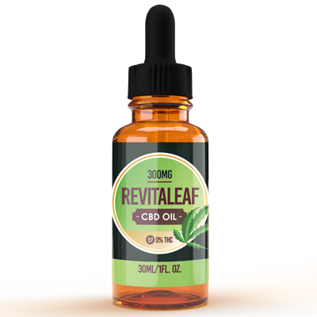
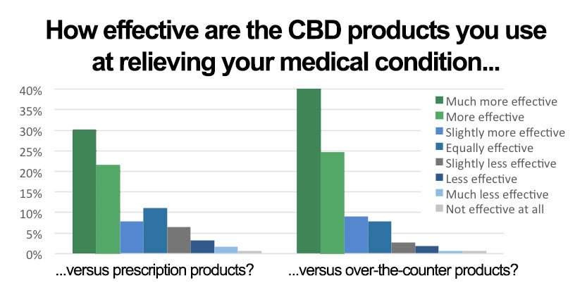

A new relief extract found in hemp is available across the nation and can be purchased without a prescription.
And the best part, it uses a new delivery system that’s 450% more effective than regular hemp oils, gummies, capsules, and creams.
Revitaleaf CBD contains pure concentrated doses of hemp extract known as CBD or Cannabidiol, which can help relieve even the most agonizing joint discomfort along with general muscle aches, soreness, sleep disorders, anxiety and many other ailments. And since it contains NO THC, it heals without the "high".
It also calms, relaxes, and eases tension all over the body.
Unfortunately, most CBD found on the market can’t deliver a fraction of these results. “The problem is, hemp products sold on Amazon do not contain any CBD whatsoever, and then, companies selling real CBD typically come in oil form,” according to Chief Technologist Mi Hwa Kim of the Green Gardener. “Oil doesn’t breach the cell membrane, which is where the real healing happens. Our body is 80% water, our cells 90%. And you know what they say about oil and water -- they don’t mix.”
This is why Revitaleaf CBD contains a unique “water soluble” system. The technology is shown to improve absorption in the cells by 450%, quickly boosting the body’s cannabinoid levels.
“The other problem is that most of these formulas only contain a single compound extract,” says Ms. Kim. “The hemp plant’s cannabinoids are shown to work synergistically. In short, they work better together. It’s called the “entourage effect.” Most miss out on the full effects because they are missing some of the best rejuvenating compounds within the hemp plant. This is why we’ve made Revitaleaf CBD with the “full hemp, low temp” extraction technology.”
“Finally, most CBD formulas are made on foreign farms with pesticides, or grown using non-organic seeds and processes. We’ve grown the hemp in Revitaleaf CBD at a 100% organic American farm, under strict agricultural guidelines. It’s grown without pesticides or GMOs. And it’s grown to contain NO THC which we have the test results to prove it.”
"I was plagued by the symptoms of Fibromyalgia and arthritis. I couldn't get out of bed. I was in pain constantly. And the 'Cures' were worse than the symptoms. They had me on harsh drugs. I was bed-ridden and severely depressed. My life was over."
"Until I found Revitaleaf CBD. Just a few days after I started taking it, I started noticing a difference. My pain has drastically reduced. I had energy again. I've been taking them for 4 months now - And I'm happy to say, I don't take any meds except CBD. It has changed my life that dramatically. I'm not exaggerating when I say CBD gave me my life back."
The key to Revitaleaf CBD ’s health benefits is the Endocannabinoid system, a network of receptors in the cells. The system is there to maintain homeostasis (balance). In response to toxins in our body, it releases cannabinoids to set things back to their natural state.
“It’s really an amazing God-given system that’s been completely overlooked. Our bodies are practically designed to work with the compounds in CBD, which is why we need a solution like Revitaleaf CBD that unleashes its full potential.”
Over time, with aging, the endocannabinoid system eventually burns out. Fewer cannabinoids are released, so the body’s levels deplete. The result is, all sorts of symptoms of aging like age-related memory loss, blurry vision, joint discomfort, aches and pains, anxiety, depression, sleep disorders, and other ailments.
One Revitaleaf CBD Drop boosts your endocannabinoid system – relieving aches and pains, improving sleep cycles, mood, memory, focus, and more. And the best part is, there is NO THC or psychoactive effects so you get amazing relief without any “high”
In fact, a recent study revealed that 60% of users say CBD is “more effective” than prescription medications. 75% found CBD more effective than over-the-counter products, as you can see below:
“I’ve tried more than 50 CBD products and this
is hands down the BEST! I have bad joint pains, sore muscles and
trouble sleeping through the night, this helps immensely! Also the best
tasting CBD I have ever had. Revitaleaf CBD really
stands behind
their customers.”
- Jason M.
“For years I have suffered mentally and physically. I have
tried so many drugs and have become addicted to some over the years. Revitaleaf CBD
changed all that. They have
done a miracle for me.
Now I don’t have to use pills to get relief. I just take my Hemp Oil and I feel
better than I have in years. Thank you Hemp Oil”
- Janis E.
“I bought the Hemp Oil brand and they have worked for me.
I have extensive arthritis...every joint in my body except my left elbow
according to x-rays. I had to quit taking any NSAIDS because of a recent
kidney problem that has developed. Today was an exceptionally bad pain day.
I took Tramadol which did nothing. These drops from Hemp Oil seem
to work best for me. ”
- Norma C.
“I have tried everything. I have severe arthritis. I have a
knee. That is so swollen. I need surgery. But at this time I just can't do it.
I have tried the creams. I have tried everything. .
Revitaleaf CBD came
yesterday. And I took one. And then I took the second one. The latter part of
the day and they do help. I was surprised. Maybe I won't have to walk
with a cane all the time. I will keep using it. I have been told by
different people that one or two days is not enough... I am more than pleased.”
- Jeanne B.
“I started taking it [ Revitaleaf CBD ] now for a
month. I was
taking about 600 pills every two weeks for the pain in my knees. I haven’t had a
pill since I also stop taking my arthritis meds as well. Yes this product
works. Thank you.”
- - Rene Barreto
A large percentage of men and women using Revitaleaf CBD experience truly amazing results. That's why it's now being sold with a guarantee that goes way beyond the industry standard.
“We can only make this guarantee because we are 100% certain our customers will be satisfied. We want to take full risk off consumers. So in addition to offering up to two free bottles for first time customers, we also make them a huge promise that ensures they don't have to risk a cent” says James Cartwright, Hemp Oil CEO.
Here's how it works: Take Revitaleaf CBD exactly as directed and you must be thrilled with the results! Otherwise, you don't pay a dime.
This is the official nationwide release of Revitaleaf CBD in the United Kingdom. And so, the company is offering FREE BOTTLES to new customers who order on Friday, May 20, 2022
A secure website has been set up for readers to place orders. This gives everyone an equal chance to try Revitaleaf CBD.
Revitaleaf CBD may be of tremendous importance to you or a loved one. It can show you how the blessings of a cure from daily discomfort — freedom from arthritis, aching joints, and inflammation — can be yours once again, no matter your age and no matter how long you have suffered.
If you are not convinced that this is the most important product in your daily health regimen — a product that may show you or a loved one how to enjoy a new life unrestricted by pain and anxiety — then you don't pay for it. No questions asked!
This offer won’t last for long so make sure you follow the link below to CLAIM YOUR FREE BOTTLE TODAY! (Just Pay $5 S&H)
Important: Due to Revitaleaf CBD 's growing popularity and recent media exposure this offer will likely sell out. Please leave your details to be first in line if you miss out today.
CLICK HERE AND CLAIM YOUR FREE BOTTLE WHILE SUPPLIES LAST!
As of Friday, May 20, 2022
LOW Stock. Sell Out Risk: HIGH
To your health,

Laura Turner
Associated Health Press
P.S. The natural pain relief miracle you’re about to discover was off limits for more than 80 years. Greedy drug companies made sure you couldn’t get your hands on it. They didn’t want you to have a proven natural remedy that fights arthritis, anxiety, joint aches, insomnia, and inflammation safely and without a prescription. This could be your one and only chance to try it yourself before Big Pharma tries to get it banned again. Try Revitaleaf CBD Risk-Free Today...
"I've had aching joints since I was 28. IT WAS LITERALLY KILLING ME! And the meds they put me on were even worse. CBD stopped my pain, healed my inflammation and all without any side effects. As far as I'm concerned, it is a miracle."
Tiffany C.
"Social Anxiety has stopped me from living my life. I didn't have friends, I never had a relationship. But CBD has changed all that. I can talk to people - in person - my therapist has started recommending it to all of her patients after seeing the change in me."
Christina Novotney.
"I'm an old man, I just thought, well, this is it, I'm never going to be able to really live life again. I gave up. Until my daughter bought me Revitaleaf CBD. My whole life changed. I had less pain, more energy and I could play golf, play with the grandkids, no more sleeping all day - no more pain."
Carl Keeton.
"I have been using Revitaleaf CBD since they first came out. And honestly, I have never had anything that has helped me more. Now my knees dont hurt anymore! It took about a week for it to fully kick in, but I have never looked back, best thing I have ever done for myself."
Brian Smith.
"I've tried more than 50 CBD products and this is hands down the BEST! I have bad joint pains, sore muscles and trouble sleeping through the night, this helps immensely! Also the best tasting CBD oil I have ever had. Revitaleaf CBD really stands behind their customers!!!"
Jason H.
 Step 1:
Step 1:As of Friday, May 20, 2022 LOW Stock. Sell Out Risk: HIGH